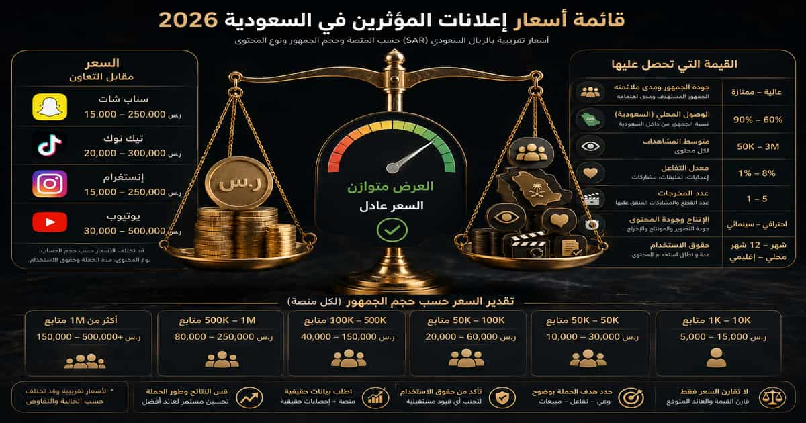

قائمة أسعار إعلانات المشاهير السعودية 2026 في دقيقة واحدة
إذا كنت تريد الرقم مباشرة قبل قراءة التفاصيل، فهذه أقصر إجابة عملية: لا توجد لائحة رسمية موحدة لأسعار المشاهير في السعودية، لكن Benchmarks السوق المنشورة خلال 2026 تضع التعاون الواحد تقريبًا ضمن النطاقات التالية.
| فئة المؤثر | عدد المتابعين | السعر التقريبي | الاستخدام المعتاد |
|---|---|---|---|
| Nano | 1,000–10,000 | 500–3,000 ر.س | حملات محلية وUGC واختبارات صغيرة |
| Micro | 10,000–100,000 | 2,500–15,000 ر.س | استهداف متخصص ومبيعات وتحويلات |
| Macro | 100,000–1 مليون | 15,000–75,000 ر.س | انتشار أوسع وإطلاق منتجات |
| Mega / Celebrity | أكثر من مليون | 75,000–500,000+ ر.س | حملات وطنية وسفراء العلامة والإطلاقات الكبرى |

لا تسأل فقط: «كم متابعًا لديه؟» اسأل: كم شخصًا يشاهد محتواه فعلًا، وكم منهم داخل السعودية، وكم منهم يشبه العميل الذي تريد الوصول إليه؟
لماذا يحتاج السوق السعودي إلى قائمة أسعار مختلفة عن الأسواق الأخرى؟
لا يكفي أخذ جدول أسعار عالمي بالدولار وتحويله إلى الريال. استخدام المنصات في السعودية مختلف، وقيمة الجمهور المحلي على كل منصة مختلفة أيضًا.
وفق تقرير Saudi Internet 2025 الصادر عن هيئة الاتصالات والفضاء والتقنية، بلغ انتشار الإنترنت في المملكة 99.6%، بينما يستخدم 61.3% من مستخدمي الإنترنت الشبكة لمدة سبع ساعات أو أكثر يوميًا.
وعند النظر إلى تطبيقات التواصل، بلغ استخدام WhatsApp نحو 92.7%، وSnapchat نحو 83.6%، وTikTok 77%، وYouTube 75.8%، بينما بلغ Instagram نحو 40.8%.
هذه الأرقام تفسر لماذا يمكن لمؤثر Snapchat سعودي أن يحمل قيمة تجارية أعلى بكثير من Benchmark عالمي للمنصة نفسها. قيمة الإعلان مرتبطة بمكان الجمهور وسلوكه، لا بعدد المتابعين العالمي فقط.
أسعار إعلانات مشاهير السناب في السعودية
البحث عن أسعار مشاهير السناب من أهم عمليات البحث المرتبطة بإعلانات المشاهير في المملكة، وذلك منطقي مع الاستخدام الواسع لـSnapchat داخل السعودية.
لكن تسعير Snapchat من عدد المتابعين فقط خطأ. الأهم هو متوسط Story Views خلال فترة حديثة.
| الفئة | نطاق الحملة التقريبي | ما الذي يجب فحصه؟ |
|---|---|---|
| Nano | 500–3,000 ر.س | متوسط Stories والجمهور المحلي |
| Micro | 2,500–15,000 ر.س | متوسط آخر القصص ونسبة الجمهور السعودي |
| Macro | 15,000–75,000+ ر.س | المشاهدات الفعلية ونتائج الحملات السابقة |
| Celebrity | 75,000 ر.س إلى ستة أرقام | المخرجات والحقوق والحصرية والانتشار |
كم سعر سنابة المشهور؟
لا يوجد رقم موحد لـ«سنابة واحدة». قد يتغير السعر بحسب عدد اللقطات، وإذا كان الإعلان تصويرًا بسيطًا من المنزل أو زيارة موقع أو مطعم أو فعالية، ومدة التغطية، وهل تتضمن الحملة إعادة نشر أو استخدامًا إعلانيًا للمحتوى.
لذلك لا تطلب فقط: كم سعر السنابة؟ بل اطلب باقة مكتوبة تحدد عدد اللقطات، مدة ظهور المنتج، الرسائل المطلوبة، موعد النشر، والبيانات التي ستُرسل بعد الحملة.
كيف تعرف إن مشاهدات سناب حقيقية ومناسبة لحملتك؟
- اطلب متوسط آخر 10 Stories، لا أعلى Story.
- قارن المشاهدات بين الأيام العادية والإعلانات.
- اطلب نسبة الجمهور داخل السعودية.
- افحص المدن إذا كان النشاط محليًا.
- راجع أداء تعاون إعلاني سابق مشابه لقطاعك.
- لا تعتمد على Screenshot قديم أو لقطة منفردة.
ولفهم استخدام Snapchat في حملات الخليج بشكل أوسع، راجع دليل التسويق عبر مؤثري سناب شات في الخليج .
من هم مشاهير السعودية على سناب شات؟ وكيف تختار بينهم للإعلان؟
البحث عن «مشاهير السناب السعوديين» أو «مشاهير السعودية رجال سناب» لا يعني أن العلامة التجارية تحتاج إلى أكبر اسم في القائمة.
القيمة تختلف حسب القطاع. مؤثر كوميدي قد يكون ممتازًا لبناء Awareness واسع، لكنه ليس بالضرورة الخيار الأقوى لمنتج تقني متخصص. وصانع محتوى مطاعم محلي قد يتفوق على مشهور أكبر إذا كان الهدف حجوزات فرع في الرياض.
لهذا نفضل عدم تثبيت «سعر» بجانب اسم كل مشهور في هذه الصفحة؛ فالأسعار التعاقدية ليست معلومة ثابتة، وعدد المتابعين والمشاهدات ونطاق الحملات يتغير.
للبحث عن الأسماء والفئات المناسبة، راجع دليل أفضل مؤثرين السعودية ، ثم استخدم دليل اختيار المؤثر السعودي المناسب لفحص الجمهور والتفاعل والتخصص قبل التواصل.
أسعار إعلانات إنستغرام في السعودية
Instagram لا يملك سعرًا واحدًا. Story وFeed Post وCarousel وReel منتجات إعلانية مختلفة.
| الفئة | Story / Stories | Post / Carousel | Reel |
|---|---|---|---|
| Nano | 300–1,000 ر.س | 500–2,000 ر.س | 700–3,000 ر.س |
| Micro | 800–3,500 ر.س | 1,500–7,000 ر.س | 2,500–15,000 ر.س |
| Macro | 3,500–15,000+ ر.س | 8,000–35,000+ ر.س | 15,000–75,000+ ر.س |
| Mega / Celebrity | 15,000–50,000+ ر.س | 40,000–150,000+ ر.س | 75,000–300,000+ ر.س |
هذه النطاقات تقريبية؛ فـReel لدى Micro Creator متخصص وله جمهور سعودي قوي يمكن أن يكون أغلى من Reel لدى حساب أكبر بجمهور ضعيف أو غير مناسب.
ما الفرق بين سعر Story وReel؟
الـStory عادة أسرع في الإنتاج ومؤقتة، بينما Reel يحتاج فكرة وتصويرًا ومونتاجًا وقد يبقى ظاهرًا على الحساب فترة طويلة.
كما أن البراند قد يرغب في شراء حقوق استخدام الـReel داخل Paid Ads لاحقًا، وهذه قيمة يجب تسعيرها بصورة منفصلة.
أسعار إعلانات مشاهير تيك توك في السعودية
في TikTok، عدد المتابعين أقل قدرة على تفسير Reach المتوقع مقارنة ببعض المنصات الأخرى. الفيديو يمكن أن ينتشر خارج قاعدة المتابعين عبر نظام التوصيات.
| الفئة | فيديو TikTok تقريبي | ما الذي يحرك السعر؟ |
|---|---|---|
| Nano | 500–2,500 ر.س | المشاهدات والتخصص وجودة المحتوى |
| Micro | 2,000–10,000 ر.س | متوسط Views والجمهور السعودي |
| Macro | 10,000–50,000+ ر.س | الوصول والإنتاج والأداء السابق |
| Mega / Celebrity | 50,000–200,000+ ر.س | الشهرة والحقوق والحصرية ونطاق الحملة |
كيف تحسب قيمة مؤثر TikTok؟
افتح آخر 10 إلى 20 فيديو مشابهًا، ثم انظر إلى المشاهدات المعتادة، وليس الفيديو الأكثر Viral.
إذا كانت أغلب المقاطع بين 80 و150 ألف مشاهدة، وفيديو واحد فقط وصل إلى 4 ملايين، فلا تسعّر الحساب وكأن كل فيديو سيحقق ملايين المشاهدات.
أسعار إعلانات اليوتيوبرز في السعودية
YouTube غالبًا أعلى تكلفة لأن الفيديو الطويل يتطلب تحضيرًا وتصويرًا ومونتاجًا أكبر، وقد يبقى قابلًا للاكتشاف من البحث والتوصيات فترة طويلة.
| الفئة | Integration داخل فيديو | فيديو مخصص |
|---|---|---|
| Micro | 3,000–15,000 ر.س | 8,000–30,000 ر.س |
| Mid / Macro | 15,000–75,000 ر.س | 30,000–150,000+ ر.س |
| Mega / Celebrity | 75,000–200,000+ ر.س | 150,000–500,000+ ر.س |
لا تقارن السعر بعدد Subscribers فقط. اطلب متوسط Views للفيديوهات الطويلة، وحدد هل العرض يشمل رابطًا في الوصف، وPinned Comment، وShort أو Story داعمة للحملة.
أسعار إعلانات البلوجر في السعودية
مصطلح «بلوجر» يستخدم أحيانًا كمرادف للمؤثر، لكن من المفيد التمييز بين أربعة أدوار:
- Celebrity: تشتري شهرة الاسم والانتشار.
- Influencer: تشتري الوصول والثقة داخل مجتمع أو تخصص.
- Content Creator: قد تكون قيمته الأساسية في إنتاج المحتوى.
- UGC Creator: ينتج المحتوى للبراند حتى لو لم ينشره على حسابه.
ولهذا يمكن أن يكون «سعر البلوجر» 3,000 ريال وسعر مشهور آخر 100 ألف ريال، رغم أن الاثنين ينتجان فيديو مدته 30 ثانية. ما يتم شراؤه ليس مدة الفيديو فقط، بل الجمهور والتوزيع والاسم والحقوق.
إعلان المشاهير بكم؟ وما الذي يشمله السعر؟
قبل مقارنة عرضين، اطلب الإجابة كتابةً عن هذه البنود:
- ما المنصة؟
- كم عدد Stories أو الفيديوهات؟
- هل يشمل Reel أو TikTok أو Snapchat؟
- هل يوجد تصوير في موقع؟
- من يتحمل الإنتاج؟
- كم جولة تعديل؟
- هل يحق للبراند إعادة نشر المحتوى؟
- هل تشمل الصفقة Paid Usage Rights؟
- هل يوجد Whitelisting أو Spark Ads؟
- هل توجد حصرية ضد المنافسين؟
- ما مدة الحصرية؟
- متى يتم النشر؟
عرض بـ20 ألف ريال قد يكون أفضل من عرض بـ12 ألفًا إذا كان الأول يشمل Reel وStories وحقوق استخدام، بينما الثاني يشمل Story واحدة فقط.
أغلى أسعار إعلانات المشاهير السعودية
الصفقات التي تصل إلى مئات آلاف الريالات لا تكون دائمًا سعر «منشور واحد».
يمكن أن يشمل المبلغ:
- Celebrity شديد الشهرة.
- عدة منصات.
- جلسة تصوير احترافية.
- ظهورًا في فعالية أو افتتاح.
- حقوق استخدام الصورة والمحتوى.
- Paid Advertising Rights.
- حصرية ضد المنافسين.
- عقد Brand Ambassador لعدة أشهر.
لذلك لا ننصح بالاعتماد على مقالات قديمة تضع رقمًا ثابتًا بجانب اسم شخص وتصفه بأنه «سعر إعلانه». السعر الحقيقي مرتبط بنطاق الاتفاق وتاريخه.
أرخص أسعار إعلانات المشاهير السعودية
إذا كانت الميزانية صغيرة، الحل ليس البحث عن «أرخص مشهور» فقط.
الأكثر كفاءة غالبًا هو بناء مجموعة من Nano وMicro Influencers يمتلكون جمهورًا مطابقًا للنشاط، ثم اختبار أدائهم قبل زيادة الاستثمار.
أسعار مشاهير الرياض وجدة والخبر والدمام: هل تختلف؟
لا يوجد جدول رسمي يقول إن مؤثر الرياض أغلى بنسبة معينة من مؤثر جدة. لكن جغرافيا الجمهور تغير قيمة المؤثر للحملة.
الرياض
إذا كان النشاط مطعمًا أو عيادة أو متجرًا أو فعالية في الرياض، فوجود نسبة عالية من الجمهور في الرياض قد يكون أهم من عدد المتابعين الوطني.
للاستهداف المحلي راجع منصة المؤثرين في الرياض .
جدة
قد تكون مطابقة الجمهور مهمة لقطاعات المطاعم والضيافة والجمال والموضة والسياحة ونمط الحياة. المعيار ليس إقامة المؤثر في جدة فقط، بل نسبة جمهوره الذي يمكنه الاستجابة للعرض.
الخبر والدمام والمنطقة الشرقية
الحملات المحلية في الشرقية مثال واضح على أن Audience Density قد تكون أهم من الحجم الوطني للحساب.
في الحملات المحلية: 20 ألف متابع مناسبين جغرافيًا قد يكونون أكثر قيمة من 500 ألف متابع موزعين على عدة أسواق.
ما العوامل التي تحدد أسعار إعلانات المشاهير السعودية؟
1. عدد المتابعين
مفيد لتحديد حجم الحساب، لكنه ليس مقياسًا كافيًا للأداء.
2. متوسط المشاهدات
أحد أهم المؤشرات. استخدم متوسطًا حديثًا أو Median لآخر 10–20 قطعة محتوى مشابهة لما ستشتريه.
3. نسبة الجمهور السعودي
إذا كنت تبيع داخل السعودية، فالجمهور الموجود خارج السوق قد يرفع Reach من دون أن يرفع المبيعات.
4. المدينة
مهم جدًا للمطاعم والعيادات والمتاجر والفعاليات والخدمات المحلية.
5. المنصة
قد يكون المؤثر قويًا على Snapchat ومتوسطًا على Instagram. لا تسعّر كل حساباته بالقوة نفسها.
6. نوع المحتوى
Story ليست مثل Reel، وTikTok بسيط ليس مثل مراجعة YouTube طويلة.
7. جودة التفاعل
Shares وSaves والتعليقات المرتبطة بالمحتوى أفضل من Likes عامة أو تعليقات متكررة وغير طبيعية.
8. التخصص
جمهور Finance أو Tech أو Beauty أو Automotive قد تكون له قيمة إعلانية مختلفة عن جمهور ترفيهي عام.
9. حقوق استخدام المحتوى
إذا أراد البراند تشغيل فيديو المؤثر داخل Meta Ads أو TikTok Ads أو موقعه، فيجب الاتفاق على الحقوق والمدة.
10. الحصرية
منع المؤثر من العمل مع منافسين لمدة شهر أو ثلاثة أشهر أو أكثر له قيمة مالية مستقلة.
11. مستوى الإنتاج
الموقع والمونتاج والتصوير الخارجي والسفر والطاقم والمعدات كلها ترفع التكلفة.
12. الموسم
رمضان والعيد واليوم الوطني وفترات الإطلاق الكبرى قد ترفع الطلب على المؤثرين.
13. سجل النتائج
المؤثر الذي يستطيع إثبات أنه حقق Leads أو Sales قد يستحق Premium أعلى من شخص يبيع Views فقط.
كم سعر الإعلان لكل 100 ألف مشاهدة؟
هذه إحدى أفضل الطرق لمقارنة عرضين عندما يكون الهدف Awareness.
استخدم:
مثال عملي
إذا دفعت 10,000 ريال وحقق الفيديو 250,000 مشاهدة، فإن:
10,000 ÷ 250,000 × 1,000 = 40 ريال CPM
أي أنك دفعت 40 ريالًا تقريبًا مقابل كل ألف مشاهدة. وبالتالي فإن تكلفة كل 100 ألف مشاهدة في هذا المثال تساوي نحو 4,000 ريال.
لكن CPM وحده لا يكفي. إذا كان الهدف حجوزات أو مبيعات، يجب معرفة CPL أو CPA أو ROAS.
كيف تعرف إذا كان سعر المشهور عادلًا؟
يمكن بناء التقييم على خمسة مستويات:
- حدد فئة الحساب.
- قارن متوسط المشاهدات.
- قِس نسبة الجمهور السعودي.
- حدد قيمة المحتوى والحقوق.
- قارن التكلفة بالنتيجة المطلوبة.
السعر المرجعي × معامل صيغة المحتوى × جودة الجمهور × حقوق الاستخدام × الحصرية + الإنتاج
ولمقارنة سيناريوهات أكثر تعقيدًا، يمكن استخدام حاسبة تكلفة حملات وإعلانات المؤثرين كمرجع تخطيطي إضافي؛ إذ تسمح بإدخال السوق والمنصة، وحجم المؤثر والمشاهدات والتفاعل ونسبة الجمهور داخل الدولة، ونوع المحتوى وحقوق الاستخدام والحصرية.
الفكرة ليست اعتبار نتيجة الحاسبة سعرًا نهائيًا، بل استخدامها مع بيانات المؤثر الفعلية لمقارنة أكثر من سيناريو قبل التفاوض.
أي فئة مؤثر تختار حسب ميزانيتك؟
| ميزانية تقريبية | خيار عملي | الهدف المناسب |
|---|---|---|
| حتى 5,000 ر.س | 1–3 Nano أو Micro صغير | اختبار محتوى أو نشاط محلي |
| 10,000–20,000 ر.س | عدة Micro بدل حساب كبير واحد | اختبار جمهور وتحويلات |
| 25,000–50,000 ر.س | Portfolio من Micro + Mid-tier | إطلاق محلي أو متجر إلكتروني |
| 50,000–100,000 ر.س | عدة Micro/Mid + دعم Paid | إطلاق منتج أو حملة مدينة |
| 100,000–250,000 ر.س | Mid/Macro + Creators متخصصون | وعي أوسع وحملة وطنية محدودة |
| 250,000+ ر.س | Macro / Celebrity + منظومة محتوى | إطلاقات كبيرة وحملات وطنية |
كم تحتاج حملة مؤثرين كاملة في السعودية؟
| الحملة | مثال للتكوين | نطاق تخطيطي |
|---|---|---|
| مطعم أو متجر محلي | 3–5 Nano/Micro | 8,000–25,000 ر.س |
| تجارة إلكترونية | 4–8 Micro + Codes | 20,000–60,000 ر.س |
| إطلاق منتج | Micro + Mid/Macro | 50,000–150,000 ر.س |
| حملة وعي وطنية | عدة Mid/Macro + Paid Media | 150,000–500,000+ ر.س |
| Brand Ambassador | تعاون طويل + حقوق + حصرية | حسب الاتفاق وقد يتجاوز 500,000 ر.س |
وللحملات التي تشمل السعودية والإمارات والكويت أو أكثر من سوق، راجع دليل أسعار المؤثرين في الخليج بدل تطبيق سعر السعودية على جميع الدول.
كيف أسوي إعلان مع مشهور في السعودية؟
1. حدد الهدف
هل تريد Awareness، زيارات متجر، طلبات WhatsApp، تحميل تطبيق، Leads، حجوزات أم مبيعات؟
2. حدد الجمهور
العمر والمدينة والاهتمامات واللغة والقوة الشرائية.
3. اختر المنصة
Snapchat أو TikTok أو Instagram أو YouTube بحسب سلوك جمهورك، لا بحسب تفضيل فريق التسويق.
4. ابنِ Shortlist
يمكن الاستفادة من أفضل منصات المؤثرين في السعودية لتنظيم البحث عن المرشحين.
5. افحص Insights
المشاهدات والجغرافيا والأعمار والتفاعل والأداء الإعلاني السابق.
6. اتفق على السعر والمخرجات
حدد كل شيء قبل التصوير: عدد المحتويات، المواعيد، التعديلات، الحقوق والحصرية.
7. جهز أدوات التتبع
UTM، Promo Code، Landing Page، رقم WhatsApp مخصص أو أي وسيلة تسمح بنسب النتيجة للمؤثر.
8. قِس النتيجة
لا تنتظر نهاية الحملة لتقرر ما الذي ستقيسه.
لدليل تنفيذ كامل راجع: كيف أشغل حملة مؤثرين في السعودية؟
كيف يكون إعلان المشهور ناجحًا بدل أن يبدو إعلانًا مصطنعًا؟
أحد أكبر الأخطاء هو إرسال Script جامد ثم الطلب من صانع المحتوى قراءته حرفيًا.
الجمهور يتابع المؤثر بسبب طريقته في الحديث والتصوير، لذلك يجب أن يحدد الـBrief:
- الرسالة الأساسية.
- المعلومات التي يجب ذكرها.
- الادعاءات الممنوعة.
- CTA.
- متطلبات العلامة.
ثم يترك للمؤثر مساحة كافية لتقديمها بأسلوب يتناسب مع جمهوره.
ما المنتجات والخدمات المناسبة لإعلانات المشاهير؟
يمكن استخدام المؤثرين في قطاعات عديدة، منها:
- المطاعم والمقاهي.
- الأزياء والعبايات.
- الجمال والعناية الشخصية.
- التجارة الإلكترونية.
- الإلكترونيات والتقنية.
- السيارات.
- السفر والسياحة والفنادق.
- الأثاث والديكور.
- التطبيقات الرقمية.
- الترفيه والفعاليات.
- العقار.
- الخدمات المالية والصحية ضمن الضوابط النظامية الخاصة بها.
اختيار المؤثر يجب أن يختلف حسب القطاع. فالمؤثر المناسب للعقار ليس بالضرورة الأفضل لمطعم أو علامة Beauty.
ما الفرق بين سعر المشهور وسعر الإعلان الممول؟
هذه تكاليف منفصلة.
| البند | ماذا تشتري؟ |
|---|---|
| Influencer Fee | النشر والوصول ومشاركة المؤثر |
| Content Production | التصوير والمونتاج والإنتاج |
| Usage Rights | حق إعادة استخدام المحتوى |
| Paid Media | ميزانية شراء وصول إضافي من المنصة |
| Campaign Management | بحث وتدقيق وتفاوض وعقود وتقارير |
مثلًا، يمكن أن تدفع 12 ألف ريال للمؤثر ثم 30 ألف ريال إضافية لـPaid Media لتوسيع أفضل Creative.
كيف تتفاوض على سعر إعلان مشهور؟
التفاوض لا يعني أن تبدأ بعبارة «آخر سعر؟».
يمكن تحسين الصفقة عن طريق:
- شراء أكثر من فيديو بسعر باقة.
- تعاون طويل بدل منشور واحد.
- خفض مدة Rights.
- تقليل الحصرية.
- توفير موقع أو إنتاج.
- تقليل جولات التعديل.
- الجمع بين Fixed Fee وPerformance Bonus.
واطلب سعرين عند الحاجة:
- Organic Publishing Only.
- Organic + Paid Usage Rights.
بهذه الطريقة تعرف بالضبط ما الذي يجعل عرض السعر يرتفع.
ترخيص موثوق وإعلانات المشاهير في السعودية
هناك جانب تنظيمي يجب التحقق منه قبل تنفيذ التعاون.
تعرف الهيئة العامة لتنظيم الإعلام موثوق بأنه ترخيص تقديم الأفراد للمحتوى الإعلاني عبر منصات التواصل الاجتماعي، وتوضح المنصة الرسمية أن الترخيص إلزامي لمزاولة الإعلانات للأفراد ضمن نطاق تطبيق الضوابط.
كما توفر منصة التراخيص الموحدة إمكانية التحقق من حصول المعلن على ترخيص موثوق باستخدام حسابه على منصة التواصل.
كيف تعرف أن سعر المشهور يستحق ما دفعته؟
| الهدف | المؤشر | المعادلة |
|---|---|---|
| الوعي | CPM | التكلفة ÷ المشاهدات × 1,000 |
| التفاعل | CPE | التكلفة ÷ التفاعلات المفيدة |
| الزيارات | CPC | التكلفة ÷ النقرات |
| العملاء المحتملون | CPL | التكلفة ÷ Leads المؤهلة |
| المبيعات | CPA | التكلفة ÷ العملاء الجدد |
| العائد | ROAS | الإيرادات المنسوبة ÷ تكلفة الحملة |
إذا كان الهدف حجوزات، فالحملة التي تحقق 200 ألف مشاهدة و100 حجز قد تكون أفضل من حملة تحقق مليون مشاهدة و20 حجزًا.
10 أخطاء تجعل إعلان المشهور أغلى مما يبدو
- اختيار الحساب بناءً على المتابعين فقط.
- عدم طلب Insights حديثة.
- تقييم TikTok بفيديو Viral واحد.
- عدم فحص نسبة الجمهور السعودي.
- عدم فحص المدن في الحملات المحلية.
- عدم تحديد حقوق الاستخدام قبل التصوير.
- دفع مقابل حصرية لا تحتاج إليها.
- استخدام المؤثر نفسه لكل القطاعات.
- استخدام كود تتبع واحد لجميع المؤثرين.
- قياس حملة مبيعات بالمشاهدات فقط.
اقرأ أيضًا: أسباب فشل حملات المؤثرين في السعودية .
متى تحتاج شركة أو جهة متخصصة لإدارة إعلانات المشاهير؟
التواصل المباشر مع مؤثر واحد قد يكون بسيطًا، لكن التعقيد يرتفع عندما تشمل الحملة 10 أو 20 أو 50 Creator.
عندها تصبح هناك حاجة إلى:
- Influencer Research.
- Audience Verification.
- Negotiation.
- Contracts.
- Briefs.
- Content Approvals.
- Scheduling.
- Rights Management.
- Reporting.
- Attribution.
يمكن الاطلاع على إدارة المؤثرين والمشاهير في السعودية لفهم الفرق بين شراء إعلان منفرد وإدارة حملة متكاملة.
هل توجد طرق بديلة عن إعلان المشاهير؟
نعم. SEO وGoogle Ads وPaid Social وAffiliate Marketing والمحتوى كلها قنوات يمكن أن تعمل بجانب Influencer Marketing.
الأفضل غالبًا ليس استبدال قناة بقناة، بل جعل المؤثر جزءًا من Funnel:
مؤثر → اهتمام → بحث → موقع → إعادة استهداف → شراء
وبذلك لا تنتهي قيمة الحملة بانتهاء Story.
نموذج جاهز لطلب سعر إعلان من مشهور
مرحبًا، نحن علامة تعمل في [القطاع] ونستهدف [الجمهور] داخل [السعودية / الرياض / جدة / المنطقة]. نرغب في تنفيذ [عدد ونوع المحتوى] على [Snapchat / TikTok / Instagram / YouTube] خلال [الفترة]. هدف الحملة هو [Awareness / Leads / حجوزات / مبيعات]. نرجو تزويدنا بـ: السعر، ومتوسط المشاهدات للمحتوى المشابه، ونسبة الجمهور داخل السعودية، وأهم المدن، وما إذا كان السعر يشمل حقوق استخدام المحتوى، ومدة الحقوق، وأي شروط حصرية أو إنتاج إضافي. شكرًا.
تريد بناء حملة مؤثرين بميزانية واضحة؟
حدد القطاع والجمهور والمدينة والمنصة والميزانية والهدف، ثم ابنِ قائمة المؤثرين على البيانات بدل التخمين.
الأسئلة الأكثر بحثًا حول قائمة أسعار إعلانات المشاهير السعودية
كم سعر إعلان المشهور في السعودية؟
لا توجد تسعيرة رسمية موحدة. كمرجع تخطيطي لعام 2026، قد يبدأ Nano من نحو 500–3,000 ريال، وMicro من 2,500–15,000 ريال، وMacro من 15,000–75,000 ريال، بينما تبدأ صفقات Mega والمشاهير من نحو 75 ألف ريال وقد تتجاوز 500 ألف ريال حسب نطاق الاتفاق.
كم أسعار إعلانات مشاهير السناب في السعودية؟
تختلف بشدة حسب Story Views والجمهور. قد تبدأ حملات الحسابات الصغيرة من مئات أو بضعة آلاف من الريالات، بينما تصل حسابات Macro والمشاهير إلى عشرات آلاف الريالات أو أكثر.
كم سعر إعلان البلوجر في السعودية؟
يعتمد على حجم الحساب والتخصص والمنصة والمشاهدات والجمهور. Micro Influencer قد يتقاضى بضعة آلاف من الريالات، بينما يحمل Celebrity Premium أكبر بسبب شهرة الاسم والانتشار.
هل عدد المتابعين يحدد سعر المؤثر؟
لا. عدد المتابعين عامل واحد فقط. متوسط المشاهدات ونسبة الجمهور السعودي والتفاعل والمنصة والحقوق والحصرية عوامل مهمة أيضًا.
هل أسعار مشاهير الرياض أعلى من جدة؟
ليس بالضرورة. في الحملات المحلية، تركيز الجمهور في المدينة المستهدفة أهم من مكان إقامة المؤثر وحده.
أيهما أرخص: TikTok أم Instagram؟
لا توجد قاعدة تنطبق على كل حساب. بعض Benchmarks تضع TikTok أدنى من Instagram للحساب نفسه، لكن متوسط المشاهدات والأداء الحقيقي أهم من متوسط المنصة.
هل السعر يشمل استخدام فيديو المؤثر في الإعلانات المدفوعة؟
ليس تلقائيًا. Organic Posting وPaid Usage Rights بندان مختلفان، ويجب الاتفاق على مدة الاستخدام والمنصات والمناطق الجغرافية.
كيف أعرف أن المؤثر مرخص في السعودية؟
تتيح منصة التراخيص الموحدة التابعة للهيئة العامة لتنظيم الإعلام خدمة التحقق من حصول المعلن على ترخيص موثوق.
هل المؤثر الصغير أفضل من المشهور؟
ليس دائمًا. Nano وMicro قد يكونان أكثر كفاءة عندما يمتلكان جمهورًا متخصصًا ومتوافقًا مع المنتج، بينما يناسب المشهور الكبير حملات Awareness واسعة.
كم ميزانية أحتاج لحملة مؤثرين؟
قد تبدأ حملة اختبار محلية من عدة آلاف من الريالات، بينما الحملات الوطنية التي تضم Macro أو Celebrity يمكن أن تصل إلى مئات آلاف الريالات. الميزانية يجب أن تبنى من الهدف والمخرجات لا من عدد المؤثرين فقط.
كيف أعددنا نطاقات الأسعار؟
لا توجد قاعدة بيانات حكومية تنشر أسعار العقود التجارية لكل مشهور أو مؤثر في السعودية. لذلك لا ينبغي التعامل مع أي جدول منشور على الإنترنت باعتباره لائحة أسعار رسمية.
اعتمد هذا الدليل على مقارنة Benchmarks منشورة للسوق السعودي في 2026، مع استخدام نطاقات واسعة بدل الادعاء بوجود سعر واحد دقيق. كما تمت مراجعة بيانات الاستخدام الرسمية الصادرة عن هيئة الاتصالات والفضاء والتقنية، ومتطلبات ترخيص المحتوى الإعلاني المنشورة عبر الهيئة العامة لتنظيم الإعلام.
المبدأ المستخدم في جميع الجداول هو: السعر مرجع للتخطيط والتفاوض، وليس وعدًا بسعر أي مؤثر بعينه.